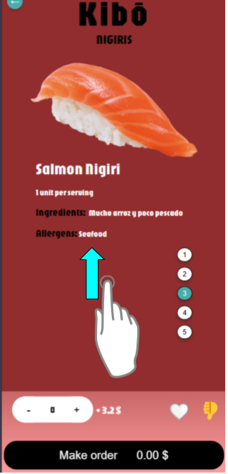

Navegación del menú
En la aplicación, explorar el menú es fácil y divertido. Aquí te explicamos cómo funciona:
- Desplazamiento vertical:
- El menú está diseñado para que puedas deslizar vertical con tu dedo (o hacer clic y arrastrar si estás en un ordenador de mesa).
- Deslízate hacia la arriba o abajo para ver todas platos disponibles.
Ejemplo:
Estas en el Nigiri de salmon (Posicion 3) y quieres ir al siguiente, desliza la pantalla hacia arriba y apareceras en nigiri que está en la posicion 4.

Tras deslizar:

- Saltar platos que no te gustan:
- Si encuentras un plato que no es de tu agrado, simplemente deslízate rápidamente hacia arriba o abajo para saltarlo y pasar al siguiente.
Tambien puedes agregarlo a "No me gusta" con el boton en el menu inferior:

Tras pulsarlo se verá asi:

Con esto conseguiras poder desplazar entre los platos disponibles sin toparte con el asignado como "No me gusta".
Ejemplo de uso común: asignarlo a un plato con el que se tiene alguna alergia o ya has probado.
- Navegacion a traves de los botones:
- En cada categoria de platos en el restaurante, veras todos los platos que hay disponibles :

El color azulado representa en el plato que te encuentras, mientras que si clickas en el numero que quieras seras desplazado hacia ese lugar:

Si clikamos en uno de ellos veremos que somos transportados a ese plato y el color del boton cambia:

Creado con el Personal Edition de HelpNDoc: Herramienta fácil de usar para crear archivos de ayuda HTML y páginas web de ayuda